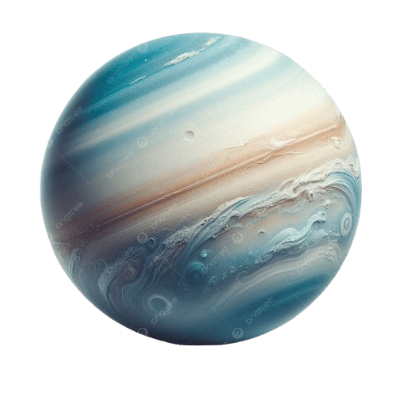

URANUS
Uranus is the seventh planet from the Sun and is known for its unique tilt — it essentially orbits the Sun on its side. It’s an ice giant with a cold, icy atmosphere composed mostly of hydrogen, helium, and methane, which gives it a bluish color.
Source: Wikipedia 🔗